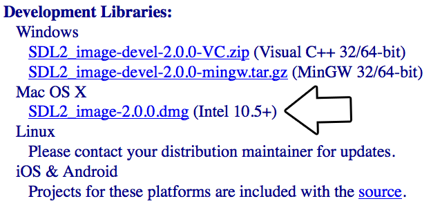
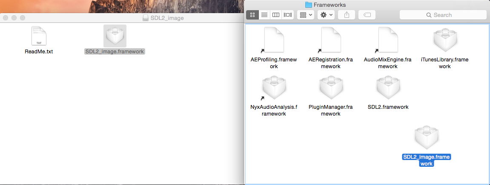

Setting up SDL Extension Libraries on Mac OS X Yosemite
Last Updated 1/12/15
Whether you're setting up SDL_image, SDL_ttf, or SDL_mixer, setting up an SDL extension library isn't all that different from setting up SDL itself. If you can set one of them up, you can set any of them up.
1)
First thing you need to do is download SDL_image headers and binaries. You will find them on the SDL_image website, specifically
on this page.
2) Next open the dmg and copy the SDL2_image.framework to /Library/Frameworks. To go directly to a path in finder, press command+shift+g.
3) The framework may need to be resigned. To sign the framework, open up a terminal to:

2) Next open the dmg and copy the SDL2_image.framework to /Library/Frameworks. To go directly to a path in finder, press command+shift+g.

3) The framework may need to be resigned. To sign the framework, open up a terminal to:
/Library/Frameworks/SDL2_image.framework/
and sign the framework using the command:codesign -f -s - SDL2_image
If you were resigning SDL_ttf, you'd open up a terminal to:/Library/Frameworks/SDL2_ttf.framework/
and sign SDL_ttf using the command:codesign -f -s - SDL2_ttf
If you were resigning SDL_mixer, you'd open up a terminal to:/Library/Frameworks/SDL2_mixer.framework/
and sign SDL_mixer using the command:codesign -f -s - SDL2_mixer
4) Now that you've installed the development libraries, it's time to start up your IDE/compiler.| Select Your IDE/Compiler | |
| XCode 6.1 | |
| Back | |